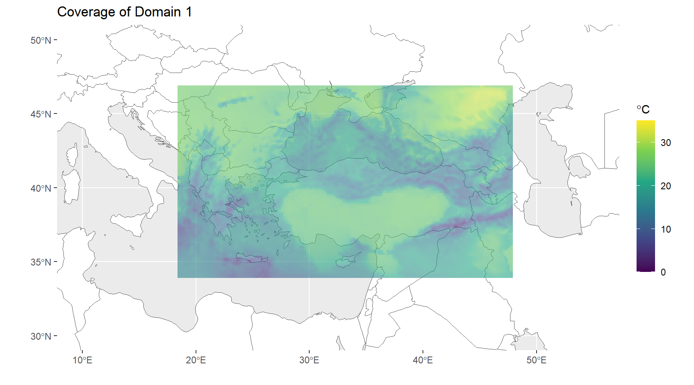

library(tidyverse)
library(raster)
library(rnaturalearth)
library(ncdf4)
library(R.utils)
library(sf)Data Assimilation for WRF Numerical Weather Prediction Outputs
Introduction
WRF Numerical Weather Prediction Model
Data Assimilation
Implementation in R
There are two files for two different domains as assimilated and non-assimilated predictions of WRF model. Thus, there are four netcdf files totally. We are going to define prediction variables, forecast period and coverage of domains for each file.
Uploading Necessary Packages
We will need several packages for some implementations in R, for instance; opening of the netcdf files of WRF data, handling of WRF outputs, visualization and etc.
Assimilated WRF Data
Firstly, we opened the assimilated WRF output for domain 1. You can see the content of WRF output below, the data cover time and coverage domain information with meteorological predictions such as wind speed (U10 & V10), precipitation (RAINC & RAINNC), etc. We need to use name of the variables to extract specific data variables from the raw data.
fname <- "D:/Kitaplar/METU-PHD/Thesis/IsmailHocandanAldim_Aksoy_27092023/aswout/wrfout_d01_2004-08-11_00_00_00"
nc_data <- nc_open(fname)Precipitation Prediction (Domain 1)
In the WRF data, RAINC is defined as ACCUMULATED TOTAL CUMULUS PRECIPITATION which is convective precipitation and RAINNC is ACCUMULATED TOTAL GRID SCALE PRECIPITATION which is non-convective precipitation. To obtain the total precipitation, we just need sum these two variables: PRECIPITATION = RAINC + RAINNC.
float RAINC[west_east,south_north,Time]
FieldType: 104
MemoryOrder: XY
description: ACCUMULATED TOTAL CUMULUS PRECIPITATION
units: mm
stagger:
coordinates: XLONG XLAT float RAINNC[west_east,south_north,Time]
FieldType: 104
MemoryOrder: XY
description: ACCUMULATED TOTAL GRID SCALE PRECIPITATION
units: mm
stagger:
coordinates: XLONG XLATSpatial Resolution (Domain 1)
Spatial resolution of domain 1 is 12 km as you can see below (DX: 12000, DY:12000).
78 global attributes:
TITLE: OUTPUT FROM WRF V3.1.1 MODEL
START_DATE: 2004-08-11_00:00:00
SIMULATION_START_DATE: 2004-08-11_00:00:00
WEST-EAST_GRID_DIMENSION: 192
SOUTH-NORTH_GRID_DIMENSION: 116
BOTTOM-TOP_GRID_DIMENSION: 28
DX: 12000
DY: 12000There are 41 time steps which means we can get convective, non-convective and total precipitation predictions along the domain (191x115). Additionally, the data includes information for 27 layers from bottom to top of the atmosphere. However, for the precipitation data we only need to calculate the precipitation that will reach the ground.
long<- ncvar_get(nc_data, "XLONG")
lat<- ncvar_get(nc_data, "XLAT", verbose = F)
rain_c <- ncvar_get(nc_data, "RAINC")
rain_nc <- ncvar_get(nc_data, "RAINNC")
dim(rain_c);dim(rain_nc)[1] 191 115 41[1] 191 115 41Forecast Period & Time Interval (Domain 1)
We can also obtained the forecast horizon by getting time steps from the data. After getting time steps, we see that forecast period is between 11 and 16 August, 2004. In this case, the time interval for the forecast period up to +120 hours (or five days) is three hour.
t <- ncvar_get(nc_data, "Times"); t [1] "2004-08-11_00:00:00" "2004-08-11_03:00:00" "2004-08-11_06:00:00"
[4] "2004-08-11_09:00:00" "2004-08-11_12:00:00" "2004-08-11_15:00:00"
[7] "2004-08-11_18:00:00" "2004-08-11_21:00:00" "2004-08-12_00:00:00"
[10] "2004-08-12_03:00:00" "2004-08-12_06:00:00" "2004-08-12_09:00:00"
[13] "2004-08-12_12:00:00" "2004-08-12_15:00:00" "2004-08-12_18:00:00"
[16] "2004-08-12_21:00:00" "2004-08-13_00:00:00" "2004-08-13_03:00:00"
[19] "2004-08-13_06:00:00" "2004-08-13_09:00:00" "2004-08-13_12:00:00"
[22] "2004-08-13_15:00:00" "2004-08-13_18:00:00" "2004-08-13_21:00:00"
[25] "2004-08-14_00:00:00" "2004-08-14_03:00:00" "2004-08-14_06:00:00"
[28] "2004-08-14_09:00:00" "2004-08-14_12:00:00" "2004-08-14_15:00:00"
[31] "2004-08-14_18:00:00" "2004-08-14_21:00:00" "2004-08-15_00:00:00"
[34] "2004-08-15_03:00:00" "2004-08-15_06:00:00" "2004-08-15_09:00:00"
[37] "2004-08-15_12:00:00" "2004-08-15_15:00:00" "2004-08-15_18:00:00"
[40] "2004-08-15_21:00:00" "2004-08-16_00:00:00"ymd_hms(t[41]) - ymd_hms(t[1])Time difference of 5 daysStudy Area (Domain 1)
Figure 1 below shows the coverage of domain 1 where covers Türkiye and its surrounding.
raster_rain_c<- list()
for (i in 1:dim(rain_c)[3]) {
raster_rain_c[[i]] <- raster(t(rain_c[, , i]),
xmn=min(long), xmx=max(long),
ymn=min(lat), ymx=max(lat),
crs=CRS("+proj=longlat +ellps=WGS84 +datum=WGS84 +no_defs+ towgs84=0,0,0"))
}
rain_c_df <-as.data.frame(raster_rain_c[[41]], xy = TRUE)
world <- rnaturalearth::ne_countries(scale='medium',returnclass = 'sf')
#turkey <- subset(world, admin == "Turkey")
ggplot(data = world) + geom_sf(fill = "white") +
coord_sf(crs = st_crs(4326), xlim = c(10, 55), ylim = c(30,50)) +
geom_raster(data = rain_c_df, aes(x = x, y = y, fill = layer), alpha=0.6) +
scale_fill_viridis_c() +
theme(legend.position = "none") + labs(x="",y="") +
ggtitle("Coverage of Domain 1") 
Precipitation Prediction (Domain 2)
There are 121 time steps for second domain since we can inference by dimension of RAINC data.
fname2 <- "D:/Kitaplar/METU-PHD/Thesis/IsmailHocandanAldim_Aksoy_27092023/aswout/wrfout_d02_2004-08-11_00_00_00"
nc_data2 <- nc_open(fname2)
long_2<- ncvar_get(nc_data2, "XLONG")
lat_2<- ncvar_get(nc_data2, "XLAT", verbose = F)
rain_c_2 <- ncvar_get(nc_data2, "RAINC")
rain_nc_2 <- ncvar_get(nc_data2, "RAINNC")
dim(rain_c_2);dim(rain_nc_2)[1] 132 63 121[1] 132 63 121Spatial Resolution (Domain 2)
Spatial resolution of domain 2 is 4 km which is a finer resolution than previous one (DX: 4000, DY: 4000).
78 global attributes:
TITLE: OUTPUT FROM WRF V3.1.1 MODEL
START_DATE: 2004-08-11_00:00:00
SIMULATION_START_DATE: 2004-08-11_00:00:00
WEST-EAST_GRID_DIMENSION: 133
SOUTH-NORTH_GRID_DIMENSION: 64
BOTTOM-TOP_GRID_DIMENSION: 28
DX: 4000
DY: 4000Forecast Period & Time Interval (Domain 2)
Forecast period for domain 2 is same with previous one. However, the time interval is one hour and it is a finer temporal resolution.
t2 <- ncvar_get(nc_data2, "Times"); t2 [1] "2004-08-11_00:00:00" "2004-08-11_01:00:00" "2004-08-11_02:00:00"
[4] "2004-08-11_03:00:00" "2004-08-11_04:00:00" "2004-08-11_05:00:00"
[7] "2004-08-11_06:00:00" "2004-08-11_07:00:00" "2004-08-11_08:00:00"
[10] "2004-08-11_09:00:00" "2004-08-11_10:00:00" "2004-08-11_11:00:00"
[13] "2004-08-11_12:00:00" "2004-08-11_13:00:00" "2004-08-11_14:00:00"
[16] "2004-08-11_15:00:00" "2004-08-11_16:00:00" "2004-08-11_17:00:00"
[19] "2004-08-11_18:00:00" "2004-08-11_19:00:00" "2004-08-11_20:00:00"
[22] "2004-08-11_21:00:00" "2004-08-11_22:00:00" "2004-08-11_23:00:00"
[25] "2004-08-12_00:00:00" "2004-08-12_01:00:00" "2004-08-12_02:00:00"
[28] "2004-08-12_03:00:00" "2004-08-12_04:00:00" "2004-08-12_05:00:00"
[31] "2004-08-12_06:00:00" "2004-08-12_07:00:00" "2004-08-12_08:00:00"
[34] "2004-08-12_09:00:00" "2004-08-12_10:00:00" "2004-08-12_11:00:00"
[37] "2004-08-12_12:00:00" "2004-08-12_13:00:00" "2004-08-12_14:00:00"
[40] "2004-08-12_15:00:00" "2004-08-12_16:00:00" "2004-08-12_17:00:00"
[43] "2004-08-12_18:00:00" "2004-08-12_19:00:00" "2004-08-12_20:00:00"
[46] "2004-08-12_21:00:00" "2004-08-12_22:00:00" "2004-08-12_23:00:00"
[49] "2004-08-13_00:00:00" "2004-08-13_01:00:00" "2004-08-13_02:00:00"
[52] "2004-08-13_03:00:00" "2004-08-13_04:00:00" "2004-08-13_05:00:00"
[55] "2004-08-13_06:00:00" "2004-08-13_07:00:00" "2004-08-13_08:00:00"
[58] "2004-08-13_09:00:00" "2004-08-13_10:00:00" "2004-08-13_11:00:00"
[61] "2004-08-13_12:00:00" "2004-08-13_13:00:00" "2004-08-13_14:00:00"
[64] "2004-08-13_15:00:00" "2004-08-13_16:00:00" "2004-08-13_17:00:00"
[67] "2004-08-13_18:00:00" "2004-08-13_19:00:00" "2004-08-13_20:00:00"
[70] "2004-08-13_21:00:00" "2004-08-13_22:00:00" "2004-08-13_23:00:00"
[73] "2004-08-14_00:00:00" "2004-08-14_01:00:00" "2004-08-14_02:00:00"
[76] "2004-08-14_03:00:00" "2004-08-14_04:00:00" "2004-08-14_05:00:00"
[79] "2004-08-14_06:00:00" "2004-08-14_07:00:00" "2004-08-14_08:00:00"
[82] "2004-08-14_09:00:00" "2004-08-14_10:00:00" "2004-08-14_11:00:00"
[85] "2004-08-14_12:00:00" "2004-08-14_13:00:00" "2004-08-14_14:00:00"
[88] "2004-08-14_15:00:00" "2004-08-14_16:00:00" "2004-08-14_17:00:00"
[91] "2004-08-14_18:00:00" "2004-08-14_19:00:00" "2004-08-14_20:00:00"
[94] "2004-08-14_21:00:00" "2004-08-14_22:00:00" "2004-08-14_23:00:00"
[97] "2004-08-15_00:00:00" "2004-08-15_01:00:00" "2004-08-15_02:00:00"
[100] "2004-08-15_03:00:00" "2004-08-15_04:00:00" "2004-08-15_05:00:00"
[103] "2004-08-15_06:00:00" "2004-08-15_07:00:00" "2004-08-15_08:00:00"
[106] "2004-08-15_09:00:00" "2004-08-15_10:00:00" "2004-08-15_11:00:00"
[109] "2004-08-15_12:00:00" "2004-08-15_13:00:00" "2004-08-15_14:00:00"
[112] "2004-08-15_15:00:00" "2004-08-15_16:00:00" "2004-08-15_17:00:00"
[115] "2004-08-15_18:00:00" "2004-08-15_19:00:00" "2004-08-15_20:00:00"
[118] "2004-08-15_21:00:00" "2004-08-15_22:00:00" "2004-08-15_23:00:00"
[121] "2004-08-16_00:00:00"ymd_hms(t2[121]) - ymd_hms(t2[1])Time difference of 5 days